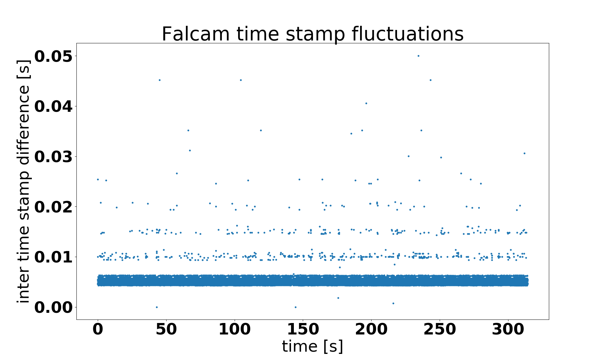
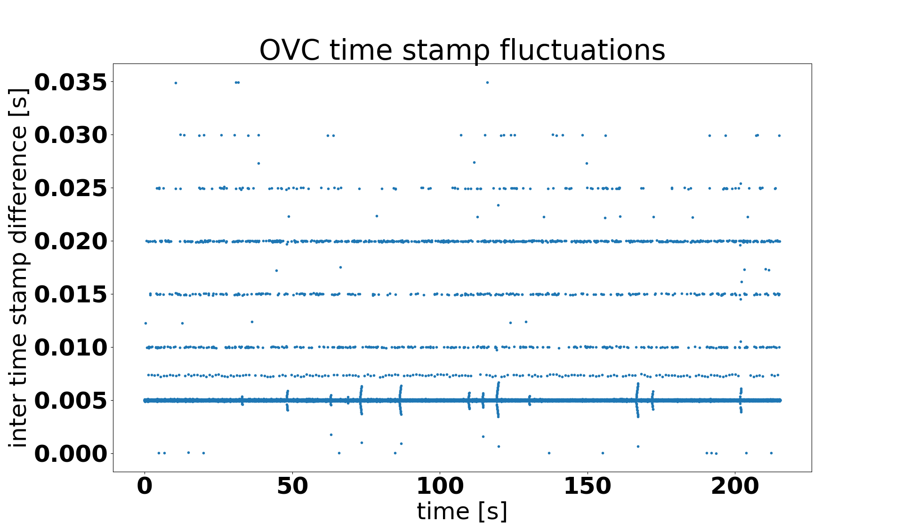

Description of the data
Overview
A data set consists of:
- ROS bag with the raw data file
- ROS bag with odometry (for some sequences also ground truth)
- calibration yaml file
- for some sequences the ROS bag used for calibration
Raw image data
Each data set comes with the raw sensor data as originally recorded (topics and frame ids have been remapped for consistency across data sets). This is how the topics may look like:
/monstar/camera_info 1057 msgs : sensor_msgs/CameraInfo
/monstar/image_depth 1057 msgs : sensor_msgs/Image
/monstar/image_mono16 1057 msgs : sensor_msgs/Image
/monstar/image_mono8 1057 msgs : sensor_msgs/Image
/monstar/image_noise 1057 msgs : sensor_msgs/Image
/monstar/points 1057 msgs : sensor_msgs/PointCloud2
/ovc/cam_0/camera_info 4458 msgs : sensor_msgs/CameraInfo
/ovc/cam_0/image_raw 4454 msgs : sensor_msgs/Image
/ovc/cam_1/camera_info 4454 msgs : sensor_msgs/CameraInfo
/ovc/cam_1/image_raw 4454 msgs : sensor_msgs/Image
/ovc/image_metadata 4458 msgs : ovc/Metadata
/ovc/imu 40810 msgs : sensor_msgs/Imu
/tf_static 1 msg : tf2_msgs/TFMessage
Static transforms and frames
The static transforms /tf_static provide the relative poses between the
sensors. They should be identical to the transforms provided in the
calibration yaml file.

The image shows camera, imu and depth sensor frames which are provided
as /tf_static. Also shown is the /tf from the fixed
vision frame to the ovc/imu. This transform is provided in the
odometry bag.
Camera and imu data
The cam_0 topic refers to the left stereo camera, the cam_1 to
the right. Note that the camera_info topics for the stereo camera
have a equidistant distortion model that is not supported by
ROS. It can however be used by the undistortion node that comes with
the multicam_calibration ROS package. If you use the “camera” function of
rviz, you need to run the undistortion node, and use the
undistorted image as topic for the rviz camera. You cannot rely on
rviz to do the undistortion correctly.
Left and right camera and imu are hardware synchronized.
Monstar data
The following data is provided:
camera_info: camera info in standard ROS format. Since the distortion model is the standard plumb-bob (rad-tan) distortion model, this can be directly used for undistorting the image.image_depth: the raw disparity image as provided by the sensor. Its direct use is discouraged for 3D reconstruction. See the discussion for thepointstopic.image_mono16: the intensity of the recorded sensor image. It is unscaled 16bit, and thus poorly suited for visualization, because most of the intensities are very low, and many ROS tools cannot display 16bit monochrome images.image_mono8: the intensity of the recorded sensor image, but scaled by the ROS driver to have a reasonable mean brightness, and reduced to 8bit depth. Use this image for visualization. This image was also used for calibrationimage_noise: the error estimate (in meters) for the depth estimate, as provided by the libroyal driver to the ROS driver.points: the 3D point cloud in the reference frame of the depth sensor. Because the built-in intrinsics of the Monstar were found to disagree with the ones obtained from optical calibration based on the intensity image, we modified the ROS driver to adjust the raw points as follows: From the raw depth image, for each pixel, we use the depth as well as the factor provided intrinsics to compute the range, i.e. the distance between sensor and 3d point. Then, using the intrinsics as determined by our calibration we compute the location of the 3D point. This means that the rawimage_depthis not quite consistent with thepoints. However, it is straight forward to compute a adjusted depth image from the 3d points. The differences between these depth images are expected to be small, since they arise only from the fact that range is converted to depth using factory-provided vs calibrated intrinsic parameters.
TODO: what ROS driver, what were the filtering settings
Calibration file
The calibration files follow the Kalibr file format:
cam0is the left stereo cameracam1is the right stereo cameracam2is the depth sensor or a 3rd camera
The rostopic field gives the identity of the camera.
The transform T_cn_cnm1 describes how to transform coordinates
from camera number n-1 (‘cnm1’) to camera number n (‘cn’). Here is an
example file:
cam0:
T_cam_imu:
- [-0.99999966637, 0.00065070822, -0.00049380236, 0.02568267124]
- [-0.00065954051, -0.99983592701, 0.01810204566, 0.02336307238]
- [-0.00048194219, 0.01810236531, 0.99983602261, -0.02648149076]
- [ 0.00000000000, 0.00000000000, 0.00000000000, 1.00000000000]
camera_model: pinhole
intrinsics: [603.924, 603.166, 665.041, 554.34]
distortion_model: equidistant
distortion_coeffs: [-0.0122741, -0.0100319, 0.00752173, -0.00247881]
resolution: [1280, 1024]
rostopic: /ovc/cam_0/image_raw
cam1:
T_cam_imu:
- [-0.99995876227, -0.00202685890, 0.00885243452, -0.17481987137]
- [ 0.00219034912, -0.99982649977, 0.01849791137, 0.02218302749]
- [ 0.00881340596, 0.01851653848, 0.99978970873, -0.02580388811]
- [ 0.00000000000, 0.00000000000, 0.00000000000, 1.00000000000]
T_cn_cnm1:
- [ 0.99995273841, 0.00284628684, 0.00929621430, -0.20032164920]
- [-0.00285007802, 0.99999586067, 0.00039459796, -0.00109630102]
- [-0.00929505268, -0.00042107425, 0.99995671141, 0.00092501568]
- [ 0.00000000000, 0.00000000000, 0.00000000000, 1.00000000000]
camera_model: pinhole
intrinsics: [604.531, 604.051, 648.481, 440.254]
distortion_model: equidistant
distortion_coeffs: [-0.0125359, -0.00914094, 0.00627174, -0.002174]
resolution: [1280, 1024]
rostopic: /ovc/cam_1/image_raw
cam2:
T_cam_imu:
- [ 0.99986803696, -0.00210248765, -0.01610863764, 0.07488791304]
- [ 0.00763722937, 0.93601503448, 0.35187714896, 0.08947244023]
- [ 0.01433810966, -0.35195373954, 0.93590757227, -0.11627405217]
- [ 0.00000000000, 0.00000000000, 0.00000000000, 1.00000000000]
T_cn_cnm1:
- [-0.99996514389, 0.00399420679, -0.00733193801, -0.10020366090]
- [-0.00641911541, -0.92932691514, 0.36920222067, 0.11849238859]
- [-0.00533909732, 0.36923641627, 0.92932016170, -0.10141814058]
- [ 0.00000000000, 0.00000000000, 0.00000000000, 1.00000000000]
camera_model: pinhole
intrinsics: [153.656, 153.335, 178.764, 145.962]
distortion_model: radtan
distortion_coeffs: [0.185238, -0.236958, -7.68728e-05, 0.000344565, 0.0678109]
resolution: [352, 287]
rostopic: /monstar/image_mono8
T_imu_body:
- [ 1.00000000000, 0.00000000000, 0.00000000000, 0.00000000000]
- [ 0.00000000000, 1.00000000000, 0.00000000000, 0.00000000000]
- [ 0.00000000000, 0.00000000000, 1.00000000000, 0.00000000000]
- [ 0.00000000000, 0.00000000000, 0.00000000000, 1.00000000000]
Odometry data
These bags contain odometry data as computed with the msckf_vio package. Here is what you would find:
/tf 45043 msgs : tf2_msgs/TFMessage
/vio/odom 45043 msgs : nav_msgs/Odometry
The /tf provides the transform between the fixed vision frame
and ovc/imu. This transform is necessary to reconstruct the point
cloud.
Quirks
No experimental data is ever perfect, and neither is the one of the GRASP multicam data set. Here are some known quirks:
IMU data has irregular time stamps
For reasons that are not entirely clear, the imu data collected from the Falcam and OVC is sometimes irregularly spaced. With the IMU running at 200Hz, the time stamps should all be exactly 0.005s apart, but they are not. Since only driver-generated message time stamps are considered (header.stamp), and there are some time stamps that have close to no gap between them, at least some of the problems cannot be attributed to data dropping in the recording process.
Below is a plot of the differences between time stamps for Falcam sequence 2018-01-16-15-39-11.

Same for the OVC1, for sequence 2018-10-24-17-25-45:

For the OVC some of the delays could be due to load on the TX2, which was running the picoflexx driver, the VIO odom (for testing), and the ovc driver itself.
We did not notice a degradation of the MSCKF VIO quality due to the above time stamp issue.
Monstar intensity image missing for the Falcam data series
Due to oversight, the topic /monstar/image_mono16 was not recorded
for the Falcam sequences, only for the OVC sequences. This image
contains the unscaled, raw intensity of the reflected
light. Fortunately, the same information is available in the intensity
channel of the point cloud topic /monstar/points.